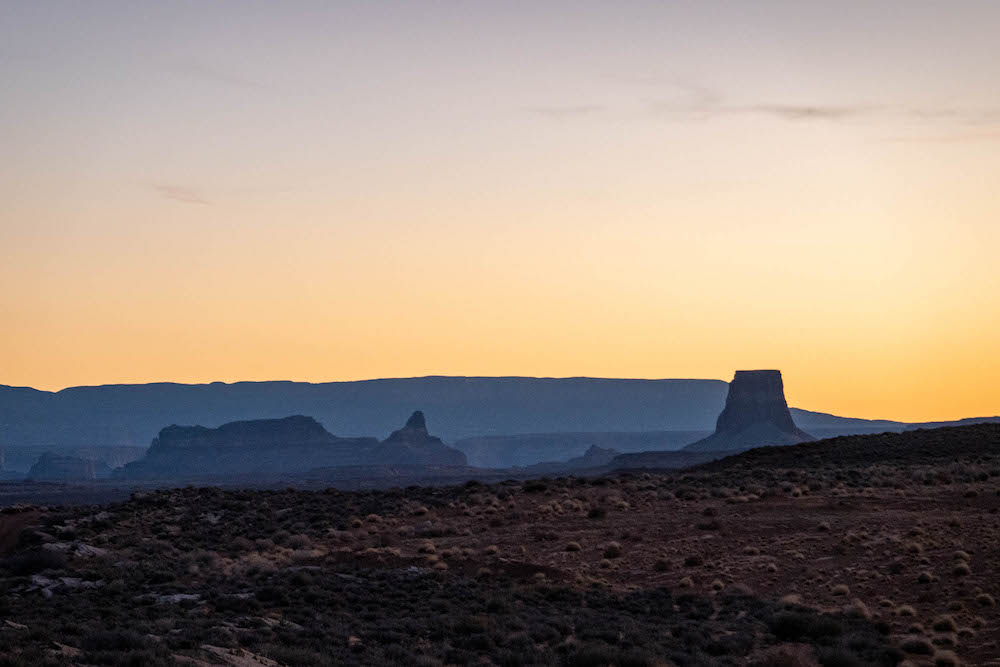

Antelope Canyon 50
March 12 2022 - Page, AZ
The Night Before
I spent the night before the race in the luxurious campground known as Walmart where I was joined by many other vans and RVs. While it's not the nicest view it was also less than five minutes from the starting line and with a 5:45AM start, that was the most important part. Plus it was flat, quiet, and free!
The Race!
Bright and early, I got up and headed over to the race. I ate a quick breakfast in the van, met up with Larry and Jed, lost Larry again, and then Jed and I headed over to the start.
And like that, we were off! It's pretty narrow towards the beginning, so at this point it's just going the pace of the group. Probably could have gone faster if I were further up front, but I think it's good I didn't! As it is, I probably went out too fast for my level of training (virtually none).
Quickly we got out to trail, and you could see the line of headlamps weaving its way around the switchbacks up the rock. Pretty cool to see what was ahead of us!
Finally the first glimpse of light coming up! Considering how beautiful this course is, it was great to start to see some of the landscape. At this point we were running along a sandy road in a wide open section.
Just a tease of what's to come. Once we turned off the road the course starts to resemble a canyon. There's a lot of sand here, but luckily it had just rained/snowed a couple days before the race. Everything had mostly dried out, but I could tell the sand could be much worse!
There was a little bit of scrambling! Nothing major, but enough to keep things interesting. There were definitely people less into this than I was... Especially considering this is an out and back section, which means you have to come back down it!
After a pretty quick stop at the first aid station, we were spit out into the dry Antelope Creek. Again I could see this being a lot worse if the sand was less firm!
Here we are at the main attraction! Entering Upper Antelope Canyon the wash quickly becomes canyon and I remember why I signed up for this race in the first place. At this point the pace slowed to a crawl, I was here for the views not my time and there was no point sprinting through such an incredible place.
After the canyon, the race climbs up onto the ridge and it becomes runnable again. Some nice singletrack up and a short fun little descent.
Since the canyons are so narrow, the race only goes through them one way. That many people trying to pass would become a traffic jam very quickly. So instead on the way back we go through another small slot canyon! Even if I hadn't stopped to take tons of pictures, I don't think this section would be very runnable.
We quickly exited that canyon and were back into the wash we ran up earlier. As much as there are a lot of runners in the race, the crowds in the canyon are nothing compared to what I've heard it gets during the day. And as we were running back down the wash I could see all the tour groups coming in.
From here it was back to the Antelope aid station, then retracing our steps until we turned off to go to the Slickrock aid station.
After Slickrock, it was another straight section heading to the Horseshoe Aid station. This is where I had my drop bag! The only thing I had in it was a massage gun (which was great), but more importantly lots of extra space. I dropped off all the layers I wouldn't be needing anymore. With the sun beating down and no shade to be found, the long sleeve I was carrying seemed unnecessary.
Quickly after leaving the aid station we were at Horseshoe Bend! Over to the right were the hordes of people at the main trail from the parking lot, but the course turns left along the rim, past a sign that says private property!
Because this area is private, the only way to see this part of the rim is a guided tour or the race! We saw a few people on tours, but even those seemed to stay only to a few scenic overlooks. So most of this part of the course is through slickrock "trail" you wouldn't be able to see any other way.
There's even another bend in the river up here just as awesome as the real Horeshoe Bend! This was an incredibly spectacular section of the race, much longer than any of the slot canyons.
Right before leaving the rim we passed one of the race photographers. This was about the only picture of me I found from the race. As we passed by he informed us that we were a few feet off from where most runners came up, and so the background wasn't quite as scenic. Even the less scenic views were still great! Then the course brings us back to the road to the next aid station.
After crossing the road and a stop at the Water Holes aid station, it was time to scramble down into Water Holes Canyon! This was a fun little scramble down to an incredible slot canyon, and the running goes back to walking.
I think Water Holes is even more spectacular than Antelope! This was another absolutely breathtaking stretch of course. Because of the recent rain, there were some stretches of water, but the canyon was narrow enough that it was easy to avoid wet feet. And still worth the tradeoff over the sand we could have had!
Eventually the canyon started to widen, and before we knew it we were back to exposed trail in the sun. The shade was welcome while it was there! And then it's back to the Horseshoe Bend aid station, where my drop bag was. We spent longer here this time around, taking full advantage of the message gun and all of the food options. I opted not to take my layers back, but I did grab my flashlight. I never ended up wearing any extra layers in the morning, so I figured I wouldn't need them at night either when it wouldn't be as cold.
The second time around at the Slickrock aid station I was moving slower, but that meant paying better attention to my surroundings! Some pretty cool looking rocks here! Was pretty happy to get to the aid station again, and scarfed down lots of food. I also used this opportunity to reapply sunscreen, which I definitely had not done often enough throughout the day. Oh well, that was a problem for the next day.
By this point, running was becoming less and less realistic, but at least I could power hike! My original plan was to drop around this point, since I had not properly trained for the race but figured a 50k was still doable. But I still felt good enough, so I still kept going. We hit a junction where the finish line was only a mile away, but turned right instead of left. That's ultrarunning, having gone 35 miles already, feeling pretty tired, being only a mile from the car, and decided "I think I'd rather go another 15!"
By the time we hit the rim trail, I was really starting to drag. But a stop at the aid station up there I hoped would be enough to fuel me to keep going. When we got to the rim trail aid station I ate as much as I could, and felt a bit more energized. As tired as my legs were feeling, my stomach was fine!
Unfortunately not too far past the aid station I started getting tired again and couldn't keep running. I knew we were running up against the cutoff times, and since Jed was still able to run he went ahead so he could finish. I knew for me it was going to be tight, but if I held it together I could do it!

As the sun was setting, I got a glimpse of Lake Powell. I may be dragging, but at least the views kept on coming! That alone was good motivation to keep going, plus I only had 10 miles to go and still two and a half hours to do it. If I could maintain a 15 minute mile for the rest I'd be fine!
Passing through the last aid station, I was still just on pace for the cutoff so I didn't want to spend much time. I grabbed a hot chocolate, drank it as quickly as I could, and kept going. I was even jogging a bit, and passing people!
The jogging didn't last long, and soon I completely fell apart. At this point even a 20 minute mile was optimistic. I knew I wasn't going to be done by the cutoff, but I was still going to walk out the rest!
At mile 48 you cross a road where you can see the stadium lights at the start finish, maybe a half mile away. But I still had 4 miles to go on course. Knowing that there was no way I could meet the cutoff, this was an incredibly tempting shortcut to take. I was originally planning on dropping at 35, and I made it to 48! May as well drop now, right? For some reason I decided to keep going and finish out the full course.
At least I had company now! One of the people I had passed while I was running had caught back up as I slowed down. I ate some food from my pack, and told myself I was going to at least keep up with their walking pace until the finish. Having someone to talk to as we plodded through the dark made it much better. That's one of the great things about ultras, chatting along like friends 40+ miles into your day with someone you've never met before!
At this point it was properly night time, and starting to get colder. I was glad I brought my flashlight, but starting to wonder why I didn't at least grab a wind shell. It wasn't freezing, especially coming from Colorado winter, but it would have been warmer with an extra layer! But on we went, stumbling along in the night chatting the miles away. Back past that junction that 15 miles ago I had originally decided to go away from the finish. And before we knew it, you could start to see bright lights in the distance. And then hear people and music. And then see the finish! There it was!
The Finish
Success! I stumbled across that finish line back into the field 16 hours and 40 minutes after I left. Almost two hours past the cutoff, but that doesn't matter much. I came here for the views and good company, and I got what I asked for! I hung out at the finish for a bit, grabbed some soup, and waddled back to the van where I laid down on the ground next to the heater with my soup. I was tired, and it was tempting to just fall asleep on the floor, but I did manage to get myself into bed first after finishing the soup!
Overall, this race was everything I could have asked for. Yes, it would have been easier and more enjoyable had I actually trained, but that's what I get for signing up for a race during ski season! And the views were incredible all the same, even at my pace I still got to see everything before the sun went down. Slot canyons, desert running, slickrock, scrambling, sweeping vistas, and of course sand. This race has it all!